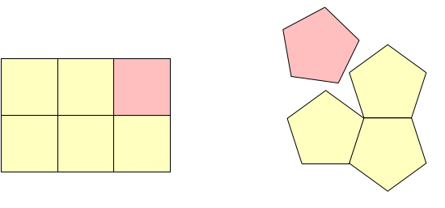
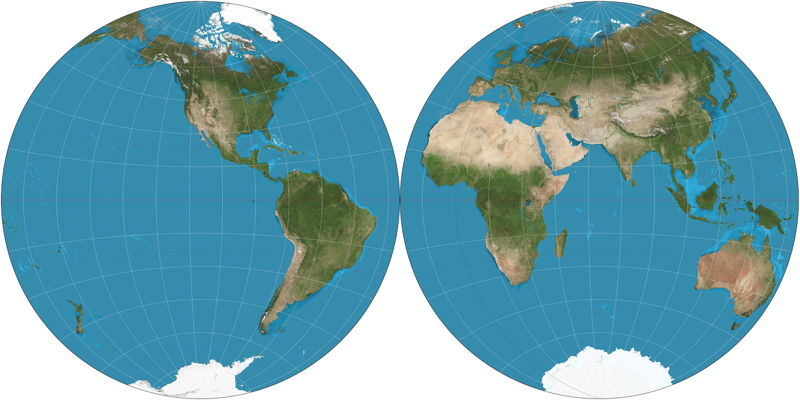
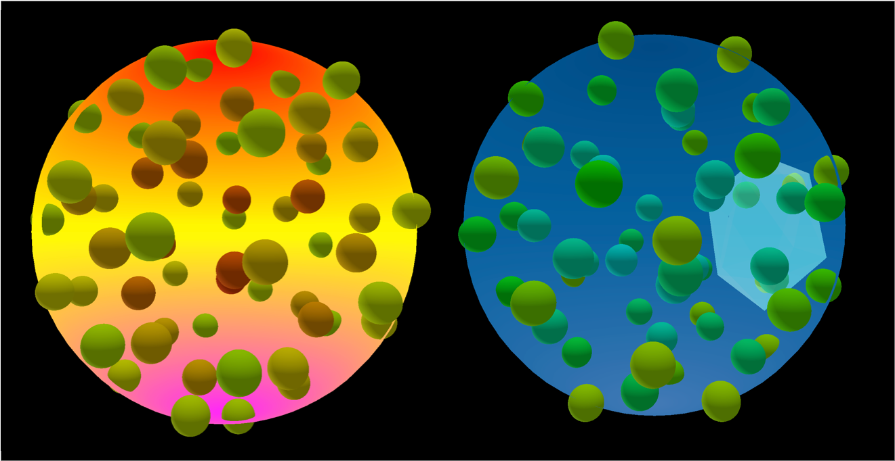
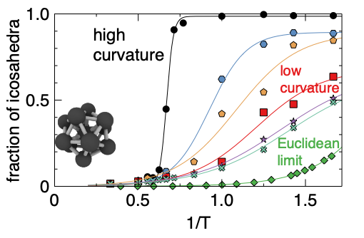

When cooled rapidly, many liquids become so viscous that they ultimately behave like solids without forming crystals. This change from liquid to non-crystalline solid is called the glass transition, and it is a major unsolved problem in condensed matter physics.
While glasses are non-crystalline and disordered, the atoms in many glassy systems are known to form transient local geometrical structures, which contribute to the high viscosity. The amount of local structure depends on the temperature and the composition of the liquid.
A key idea is that the amount of local structure at a given temperature and composition is dictated by the degree of so-called geometric frustration of the liquid and this is determined by the nature of the local structures. These act like puzzle pieces that do not quite work together, and the more so the more such pieces are incompatible with global crystalline order.
Interestingly, many glassforming liquids tend to form icosahedral local structures which are inherently incompatible with crystalline ordering, but are closely related to quasi-crystalline ordering.
Therefore, it is natural to wonder: can we control the propensity of such liquids to form icosahedra? can this be done by tuning the frustration of the icosahedra?
The answer is that this can be done (in an abstract sense) by curving space.
Geometric frustration and curvature
Geometric frustration is easier to understand in two dimensions. If you take a square and repeat it many times on the plane, you can cover the entire plane. However, if you try to do the same with a regular pentagon, you will see that it is not possible. There will always be some uncovered region of the plane.

Now let's consider covering the surface of a sphere, like the Earth's surface, with pentagons instead of covering a plane. The polyhedron with only pentagonal faces is the dodecahedron, and its projection on the sphere yields connecting arcs that can create a pentagonal tiling with curved pentagons! So curving the flat plane onto the sphere allows us to cover it solely with icosahedra.
So far so good: we have been considering the tiling of surfaces. What about volumes? One can make very similar considerations and discover that there are specific geometric units that do not tile (i.e. fill) our ordinary three dimensional space: these are, for example, icosahedra.
For icosahedra to tile space, we need to do the same as in two-dimensions: we need to curve space. But how do we curve our Euclidean, three-dimensional space? Formally, we can proceed very similarly to the planar case: we move from our conventional Euclidean three-dimensional space to the surface of a higher dimensional sphere (a hypersphere), i.e. the surface of four dimensional sphere, also called 3-sphere.
The surface of a four dimensional sphere of radius \( R \) is defined by the equation\[ x^2+y^2+z^2+w^2 = R^2 \]
where \(x,y,z, w \) are the Cartesian coordinates in four dimensions.
The surface is a 3-dimensional manifold, and it is called 3-sphere.
It has no borders and can only be visualised in three dimensions via suitable projections.
Its curvature is defined as the inverse of the radius \( \kappa = 1/R \)
What are we seeing?
The visualisation displays the atoms of a liquid moving around in curved three-dimensional space, on the surface of hypersphere of radius \(R \) . The larger \ R \) , the lower the curvature.
The atoms are initially disordered and depending of the temperature of the liquid and the curvature of space they settle in different steady states:
at high temperature and low curvature, the system is mostly disordered
at low temperature and high curvature, the system is mostly ordered, and the ordered regions are formed by icosahedral arrangements of the atoms.
for the intermediate cases (low temperature, low curvature and high temperature, high curvature) the system is largely icosahedral, but with many defects.
To understand the visualisation, we need to understand how a 3-sphere can be projected.
Maps and projections
Again, we start with an analogy with two dimensions. The surface of the Earth can be projected in multiple ways on the plane, with maps that differ by how they preserve angles or distances. Points at the borders of such maps are mapped onto each other, so that one can travel continuously from one side to the other.
A clever way to represent the sphere is to think of dividing the sphere in two halves and projecting the two hemispheres on two circles. This is what Iranian polymath al Biruni did about the year 1000 and was known in the west as Nicolosi projection.

In this procedure, we start with the surface of a three-dimensional sphere (the earth) and end up with two two-dimensional spheres (circles), whose borders are mapped onto each other.
The same idea can be applied to the 3-sphere: we start with the surface of a 4-dimensional object and we go down one dimension to map it onto two three-dimensional spheres. We then have two spheres to navigate and as we cross the border of one sphere, we get into the other. We have then two ordinary (3d) spheres, where we can place the simulated atoms and observe their rearrangements.

It is interesting to note that this picture of the four dimensional sphere (the so-called two-ball construction) was well established already in the Middle Ages and may have influenced Dante Alighieri in his conception of the structure of the universe, with Paradise and the Earth themselves representing the two three-dimensional spheres that together achieve the unity of a four-dimensional universe.
Glassformers and local structure on the 3-sphere
Using 3D rendering techniques we can visualise the position of the various atoms inside the spheres (with some distortion of the relative distances due to the projection). Each atom \( i \) has four coordinates \(x_i,y_i,z_i, w_i \) but we only represent three, and us the fourth to decide on which hemisphere to locate the atom.
The visualisation shows a sphere with many smaller balls representing the liquid atoms. The sphere changes color when we move from positive to negative fourth coordinate \( w\) meaning that we move from one hemi-sphere to the other.
For every atom, we can study its local environment and identify the presence of icosahedral patterns. These are shown as white shaded polyhedra, which can overlap and form regions of local order.
In the reference publication Turci et al. Phys. Rev. Lett. 118, 215501, (2017), it was shown that changing the temperature leads to a sharp transition in the number of icosahedra for spheres with high curvature and a smoother, broader transition in the limit of very large spheres, approximating the Euclidean limit.
